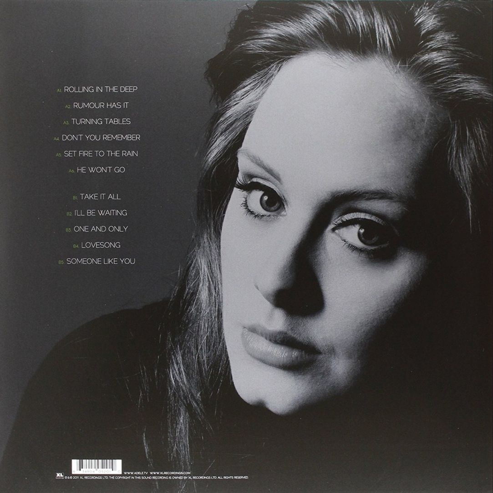
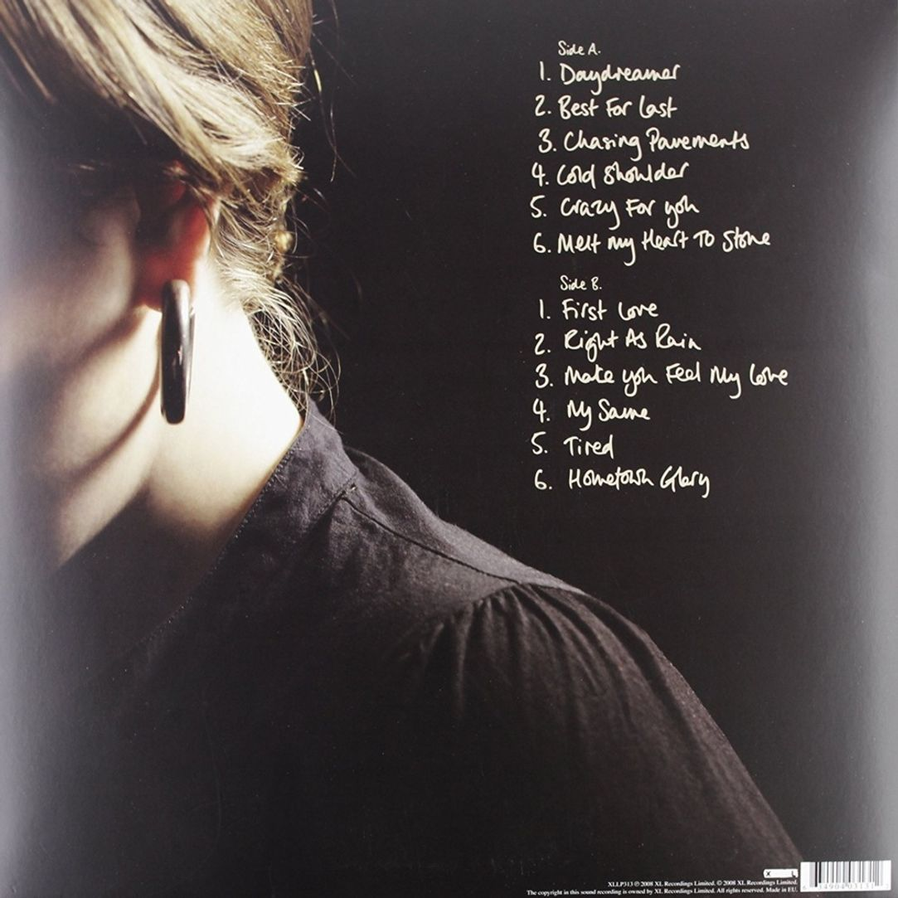

Album 30 (Target Exclusive), Adele [Photograph]. (n.d). In genius.com. Retrived September 29, 2025.
30
Released: November 19, 2021
Songs:
- By Nature
- Easy On Me
- My Little Love
- Cry Your Heart Out
- Oh My God
- Can I Get It
- I Drink Wine
- All Nights Parking Interlude (Ft. Erroll Garner)
- Woman Like Me
- Hold On
- To Be Loved
- Love Is A Game
- Wild Wild West
- Can't Be Together
- Easy on Me (Duet Version) (Ft. Chris Stapleton)
Album 25, Adele [Photograph]. (n.d). In genius.com. Retrived September 29, 2025.
25
Released: Nobember 21, 2015
Songs:
- Hello
- Send My Love (To Your New Lover)
- I Miss You
- When We Were Young
- Remedy
- Water Under the Bidge
- River Lea
- Love in the Dark
- Million Years Ago
- All I Ask
- Sweetest Devotion
- Can't Let Go
- Lay Me Down
- Why Do You Love Me

Album 21, Adele [Photograph]. (n.d). In genius.com. Retrived September 29, 2025.
21
Released: February 22, 2011
Songs:
- Rolling in the Deep
- Rumour Has It
- Turning Tables
- Don't You Remember
- Set Fire to the Rain
- He Won't Go
- Take It All
- I'll Be Waiting
- One and Only
- Lovesong
- Someone Like You
- Need You Now (Live At CMT Artists Of The Year Awards) (Ft. Darius Rucker)
- Someone Like You (Live Acoustic)
- Turning Tables (Live Acoustic)
- Don't You Remember (Live Acoustic)

Album 19, Adele [Photograph]. (n.d). In genius.com. Retrived September 29, 2025.
19
Released: January 28, 2008
Songs:
- Daydreamer
- Best for Last
- Chasing Pavements
- Cold Shoulder
- Crazy for You
- Melt My Heart to Stone
- First Love
- Right as Rain
- Make You Feel My Love
- My Same
- Tired
- Hometown Glory